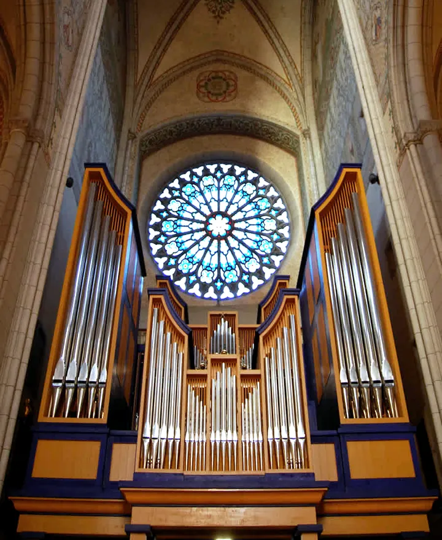
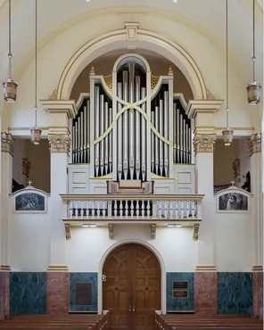
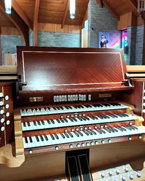
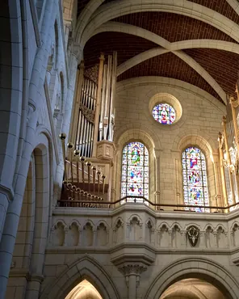
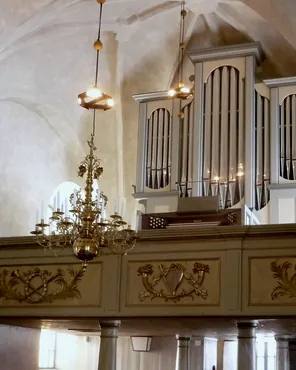
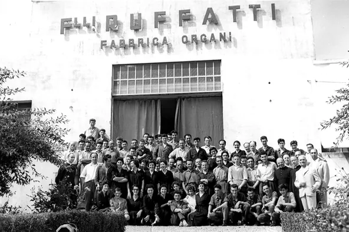
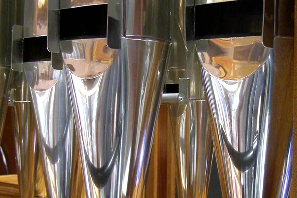
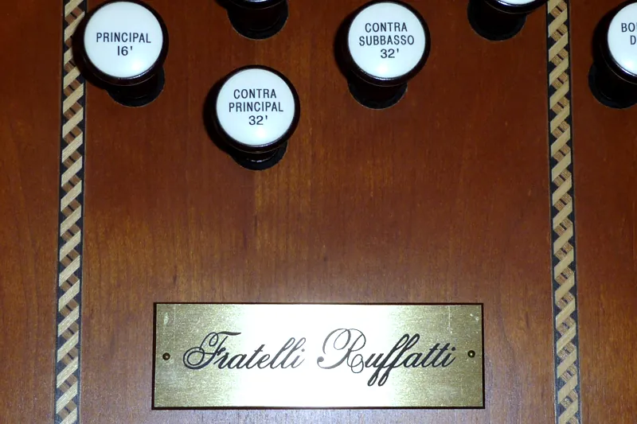

Costruttori e restauratori d’organi a canne
Padova, dal 1940
Il nome della targhetta d’ottone Qui sotto: l’organo della cattedrale di Uppsala, 2009

Da Padova abbiamo raggiunto negli anni tutti i continenti.
Nel ventunesimo secolo abbiamo aggiunto il Messico, l’Australia, la Svezia, l’Irlanda e la Cina ai Paesi che ospitano i nostri strumenti.
Organi nuovi
Per chiese, cattedrali, università e sale da concerto, a trasmissione meccanica o elettrica.
Le 86 opere significative, da una a sei tastiere →- 2023Pershore Abbey, Worcestershire, InghilterraTre manuali e 33 registri.Fonte: l’abbazia ↗
- 2022Notre Dame Seminary, New Orleans, LouisianaDue manuali; cassa laccata in bianco con foglia d’oro a 24 carati.La notizia →
- 2022Santa Caterina da Siena, Wayne, PennsylvaniaTre manuali e 37 registri, due consolle.La notizia →

Notre Dame Seminary, New Orleans2022 · due manuali 
Santa Caterina da Siena, Wayne, Pennsylvania2022 · la consolle, tre manuali 
Buckfast Abbey, Devon2017 · organo del coro, casse di rovere massiccio 
Chiesa parrocchiale di Boteå, Sveziacontratto del 2015 · trasmissione meccanica
«I Principali cantano.»
Joyce Jones, concertista, già docente di musica e organista titolare della Baylor University, Waco, Texas, sul loro organo Ruffatti
Video e CDCD incisi su organi Ruffatti →Making 32’ Reeds, YouTube ↗Il canale Ruffatti organs ↗
Costruiamo ogni componente possibile in laboratorio
dai somieri alle canne ad anima e ad ancia, fino ai particolari più minuti.
Nel 1940 i tre fratelli Alessio, Antonio e Giuseppe Ruffatti danno vita alla «Famiglia Artigiana Fratelli Ruffatti». Oggi la guidano Piero e Francesco, figli di Antonio e soci dal 1968; con loro lavora dal 2004 Michela Ruffatti, architetto.
La famiglia Ruffatti →
- 1Il legnameMogano sipo certificato FSC, stagionato naturalmente per cinque anni.
- 2Lastre per canneStagno e piombo fusi in un crogiolo, colati sul banco di marmo.
- 3Canne ad animaIl metallo battuto a mano sulle forme, saldato e lucidato a mano: tutte le canne, grandi e piccole, una per una.
- 4Canne ad anciaLe noci fuse a mano e tornite una per una.


Restauro filologico di organi antichi
Restauriamo organi di ogni epoca e anche di altri costruttori, da Giovanni Guglielmi (Roma, Vallicella, 1612) a Gaetano Callido e Girolamo Zavarise: circa 120 restauri, con località e anno, nell’elenco delle opere eseguite, aggiornato al 2020.
Scriveteci
Un organo nuovo
Diteci l’istituzione e il vostro ruolo, la chiesa o la sala con la città, l’organo di oggi se c’è; allegate la pianta o qualche foto della cantoria.
Un restauro, o un organo Ruffatti in chiesa
Per la prima telefonata tenete a portata di mano il nome della chiesa, il costruttore e l’anno dell’organo se li conoscete, una foto della consolle e della targhetta.
Per gli organisti
Il Concorso internazionale d’organo di Miami, biennale, per organisti di età inferiore ai 30 anni: primo premio US$ 5.000, prossima edizione nel 2027.